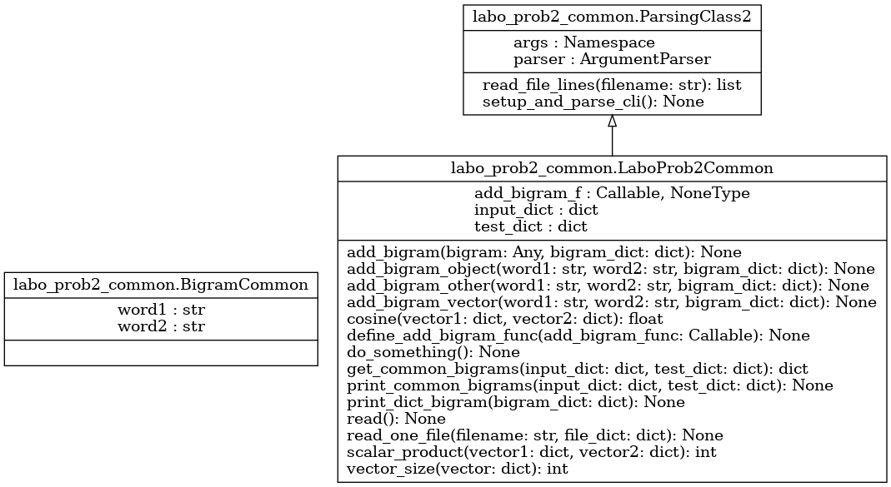

Module labo_prob2_common
Diagramme de classe
{kind=link}
Code du module
Code pour explorer le deuxième exercice du laboratoire - APP du cours GIF270
- L’exercice 2 touche les tableaux de hachage et leur redéfinition en Python :
Redéfinition de la méthode pour établir l’égalité entre deux objets
Redéfinition de la méthode de hachage pour obtenir un nombre à partir d’un objet
Redéfinition de la méthode d’ajout d’un bigramme dans un vecteur (dict qui contient un ensemble de bigrammes)
Redéfinition de la méthode pour calculer la taille d’un vecteur
Redéfinition de la méthode de calcul du produit scalaire entre deux vecteurs
Redéfinition de la méthode de calcul du cosinus de l’angle entre deux vecteurs
- Note :
Le traitement des arguments a été inclus dans la classe ParsingClass2, qui est utilisée dans le code principal
Tous les arguments requis sont présents et accessibles dans ParsingClass2.args
Le traitement du mode verbose vous donne un exemple de l’utilisation des arguments
La classe SmartFormatter permet d’imprimer correctement la chaîne de caractère « help » lorsqu’elle débute par « R| »
Copyright 2018-2025, Frédéric Mailhot et Université de Sherbrooke
- class labo_prob2_common.BigramCommon(premier_mot: str, deuxieme_mot: str)[source]
Bases :
objectCréation de méthodes permettant de personnaliser un dictionnaire (tableau de hachage) - Dans cette classe, on redéfinit comment faire le hash et comparer deux objets de type Bigramme
Initialisation d’une nouvelle instance de Bigramme :
- Args :
premier_mot (str) : Premier mot du bigramme deuxieme_mot (str) : Deuxième mot du bigramme
- Returns :
(void) : Au retour, l’objet est initialisé
- class labo_prob2_common.LaboProb2Common[source]
Bases :
ParsingClass2Classe de test pour valider la personalisation d’un dictionnaire (tableau de hachage) - Classe hérite de ParsingClass2, qui lit les paramètres de la ligne de commande
Initialisation d’une nouvelle instance de LaboProb2 :
- Returns :
(void) : Au retour, l’objet est initialisé
- static add_bigram(bigram: Any, bigram_dict: dict) None[source]
Méthode appelée pour ajouter un bigramme au dictionnaire fourni :
- Args :
bigram (Any) : object (arbitraire) qui représente un bigramme et qui est utilisé comme clé bigram_dict (dict) : tableau de hachage de bigrammes. Utilisé pour emmagasiner et compter les bigrammes
- Returns :
(void) : Le nouveau bigramme est ajouté au dictionnaire de bigrammes fourni
- static add_bigram_object(word1: str, word2: str, bigram_dict: dict) None[source]
- Méthode appelée pour créer un bigramme (à l’aide des deux mots fournis)
et pour l’ajouter au dictionnaire fourni :
- Args :
word1 (str) : premier mot word2 (str) : deuxième mot bigram_dict (dict) : tableau de hachage de bigrammes. Utilisé pour emmagasiner et compter les bigrammes
- Returns :
(void) : Le nouveau bigramme est ajouté au dictionnaire de bigrammes fourni
- static add_bigram_other(word1: str, word2: str, bigram_dict: dict) None[source]
- Méthode appelée pour créer un bigramme (à l’aide des deux mots fournis)
et pour l’ajouter au dictionnaire fourni, la clé étant un vecteur :
- Args :
word1 (str) : premier mot word2 (str) : deuxième mot bigram_dict (dict) : tableau de hachage de bigrammes. Utilisé pour emmagasiner et compter les bigrammes
- Returns :
(void) : Le nouveau bigramme est ajouté au dictionnaire de bigrammes fourni
- static add_bigram_vector(word1: str, word2: str, bigram_dict: dict) None[source]
- Méthode appelée pour créer un vecteur de deux mots et pour l’ajouter au dictionnaire fourni :
Est-ce que cette méthode fonctionne ? Pourquoi ?
Si elle ne fonctionne pas, utilisez plutôt les méthodes add_bigram_object et add_bigram_tuple
- Args :
word1 (str) : premier mot word2 (str) : deuxième mot bigram_dict (dict) : tableau de hachage de bigrammes. Utilisé pour emmagasiner et compter les bigrammes
- Returns :
(void) : Le nouveau bigramme est ajouté au dictionnaire de bigrammes fourni
- static cosine(vector1: dict, vector2: dict) float[source]
Méthode calculant le cosinus de l’angle entre 2 vecteurs (produit scalaire normalisé) :
- Args :
vector1 (dict) : tableau de hachage contenant tous les bigrammes du premier fichier vector2 (dict) : tableau de hachage contenant tous les bigrammes du deuxième fichier
- Returns :
angle_cos (float) : Cosinus de l’angle entre les deux vecteurs (produit scalaire normalisé)
- define_add_bigram_func(add_bigram_func: Callable) None[source]
Méthode utilisée pour redéfinir la fonction d’ajout de bigrammes :
- Args :
add_bigram_func (Callable) : Méthode à utiliser par l’objet pour ajouter un bigramme à un tableau
- Returns :
(void) : Au retour, la méthode d’ajout de bigrammes a été redéfinie
- do_something() None[source]
Méthode appelée pour donner les statistiques voulues :
- Args :
(void) : Tout se trouve dans l’objet
- Returns :
(void) : Au retour, tout a déjà été imprimé à l’écran
- static get_common_bigrams(input_dict: dict, test_dict: dict) dict[source]
- Méthode utilisée pour produire un tableau de hachage avec tous les bigrammes communs
à input_dict et test_dict
- Args :
input_dict (dict) : tableau de hachage contenant les bigrammes issus du premier tableau test_dict (dict) : tableau de hachage contenant les bigrammes issus du deuxième tableau
- Returns :
common_dict (dict) : tableau de hachage contenant les bigrammes communs aux deux tableaux
- static print_common_bigrams(input_dict: dict, test_dict: dict) None[source]
Méthode utilisée pour imprimer tous les bigrammes communs à deux tableaux de hachage :
- Args :
input_dict (dict) : tableau de hachage contenant les bigrammes issus du premier fichier test_dict (dict) : tableau de hachage contenant les bigrammes issus du deuxième fichier
- Returns :
(void) : Rien n’est retourné
- static print_dict_bigram(bigram_dict: dict) None[source]
Méthode utilisée pour imprimer tous les bigrammes contenus dans un tableau de hachage :
- Args :
bigram_dict (dict) : tableau de hachage contenant des bigrammes
- Returns :
(void) : Rien n’est retourné
- read() None[source]
Lecture des deux fichiers nécessaires à l’exercice :
- Args :
(void) : Tout se trouve déjà dans l’objet
- Returns :
(void) : Au retour, les tableaux de hachage sont complets
- read_one_file(filename: str, file_dict: dict) None[source]
Lecture d’un fichier de bigrammes et ajout dans le tableau de hachage fourni :
- Args :
filename (str) : Nom du fichier à traiter file_dict (dict) : Tableau de hachage à remplir
- Returns :
(void) : Au retour, le tableau de hachage est complet
- static scalar_product(vector1: dict, vector2: dict) int[source]
Méthode calculant le produit scalaire entre 2 vecteurs :
- Args :
vector1 (dict) : tableau de hachage contenant tous les bigrammes du premier fichier vector2 (dict) : tableau de hachage contenant tous les bigrammes du deuxième fichier
- Returns :
prod_scal (int) : Produit scalaire entre les deux vecteurs
- class labo_prob2_common.ParsingClass2[source]
Bases :
objectCréation d’un parser prédéfini pour lire les paramètres de la ligne de commande pour le deuxième exercice
- Initialisation d’une nouvelle instance de ParsingClass2 :
Ajoute toutes les valeurs par défaut des paramètres utilisés
Modifie les valeurs redéfinies sur la ligne de commande
- Returns :
(void) : Au retour, l’objet est initialisé
Note
Documentation créée le 20 févr. 2025.